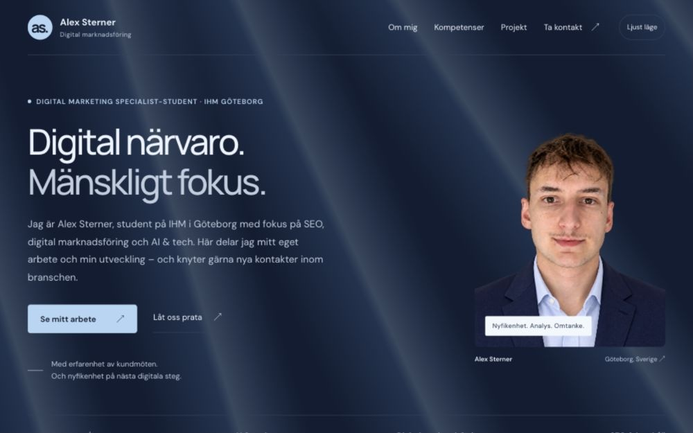

01
SEO
Jag vill lära mig mer om sökbeteenden, sökordsanalys och hur innehåll och webbstruktur kan göra ett företag lättare att hitta.
Se sidans SEO-grundDIGITAL MARKETING SPECIALIST-STUDENT · IHM GÖTEBORG
Jag är Alex Sterner, student på IHM i Göteborg med fokus på SEO, digital marknadsföring och AI & tech. Här delar jag mitt eget arbete och min utveckling – och knyter gärna nya kontakter inom branschen.
Alex Sterner · Digital Marketing Specialist-student på IHM i Göteborg
01 / FOKUSOMRÅDEN
Tre områden jag vill fördjupa mig i. Jag bygger mina kunskaper inom vart och ett och utforskar hur de kan samspela i praktiken.
Jag vill lära mig mer om sökbeteenden, sökordsanalys och hur innehåll och webbstruktur kan göra ett företag lättare att hitta.
Se sidans SEO-grundJag vill utveckla min förståelse för målgrupper, strategi och kanalval – och bli bättre på att skapa och följa upp innehåll för sociala medier och e-post.
Se arbetet med portfolionJag vill fördjupa mina kunskaper inom AI och tech och utforska hur digitala verktyg kan stötta idéarbete, innehåll och webbutveckling.
Se arbetet med AI & tech02 / Ett eget projekt
Min portfolio är ett pågående eget projekt. Här visar jag hur innehåll, design och teknik möts i en faktisk webbplats.

Eget projekt · Webb & innehåll
En personlig plats för att presentera min inriktning, samla det jag gör och göra det enkelt att ta kontakt.
Hur kan jag visa vem jag är och vad jag vill utvecklas inom, på ett sätt som är lätt att ta till sig?
Jag har arbetat med sidans innehåll, struktur och visuella riktning. AI har hjälpt till att omsätta idéerna i kod.
Resultatet är sidan du besöker: en responsiv portfolio med projektdokumentation, temaväljare och direktkontakt via mejl och LinkedIn.
Konkreta exempel gör arbetet lättare att bedöma. Därför får webbplatsen och besluten bakom den ta plats medan portfolion växer.
Jag utforskar AI och tech tillsammans genom att utveckla min webbplats. AI fungerar som kodstöd; jag sätter riktningen och väljer vilka förslag som passar min presentation.
Kodförslag för sidans HTML, CSS och JavaScript: layout, temaväxling och navigation. Det ger mig ett konkret resultat att granska och utveckla vidare.
En tydlig studentroll i introduktionen, större text för detaljer och mer utrymme för det faktiska arbetet. Innehållet hålls till min egen portfolio och mina fokusområden.
Layouten granskas på mobil och dator, i ljust och mörkt läge. Menylänkar, projektets utfällbara delar och tangentbordsnavigation kontrolleras i webbläsaren.
Webbplatsen visar hur jag arbetar med AI-stöd och fortsätter lära mig om webb, innehåll och tillgänglighet.
Här är exempel från den här sidans SEO-grund. Titeln och beskrivningen kopplar presentationen till mitt namn, min utbildning och Göteborg.
Fokus här är sidans innehåll och struktur. Synlighet i sökresultat behöver följas upp över tid.
03 / PERSONEN BAKOM
Alex SternerDigital Marketing Specialist-student
Jag vill förstå både människan framför skärmen och möjligheterna bakom den.
Min erfarenhet från butik har lärt mig att lyssna, ställa frågor och förstå vad en kund behöver. Det perspektivet tar jag med mig när jag utforskar digital marknadsföring.
Nu studerar jag på IHM Business School i Göteborg. Mina tre intresseområden är AI & tech, SEO och digital marknadsföring. Jag vill fortsätta utveckla mina kunskaper inom alla tre – både var för sig och där de möts.
04 / TA KONTAKT
En idé, en fråga eller ett möjligt samarbete? Berätta gärna vad du har i tankarna, så tar vi samtalet därifrån.
Skriv till Alex